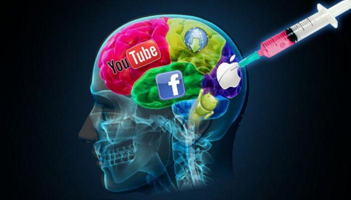

Octubre 22
¿La tecnología y redes sociales buena o mala influencia en el mundo actual?
Por Sara Manjarrés
Me considero una persona amante a la tecnología y a las redes sociales. Me encanta tener los últimos celulares sin importar el costo y sin las consecuencias que esto puede traer. Siempre he opinado que no te hace más persona o menos persona tener el último celular, las personas de la actualidad cree que por tener los últimos celulares eres más que otras personas y eso es mentira todos somos iguales sin importar nuestra condición económica.

Las redes sociales se han convertido en nuestro mejor aliado porque gracias a ellas tenemos una vida social activa, nos ayudan a ver los que está en tendencia, ver conflictos que en la televisión no muestra o cosas que nos ocultan, actualidades de innovación. He visto documentales donde personas que trabajaban en Facebook muestran la realidad detrás de una pantalla, tenemos personas que manejan nuestros perfiles a su antojo, muestran nuestros temas de interés para que nosotros estemos pendientes a redes sociales y veamos lo que nos interesa, esas son las estrategias de estas plataformas digitales. Pero también debemos tener en cuenta que las redes sociales son nuestro peor enemigo porque nos consumen poco a poco sin darnos cuenta nos volvemos adictos a ellas, descuidamos muchas responsabilidades por estar horas en ellas. Yo he tratado de alejarme un poco de ella porque yo era una persona adicta a las redes sociales no podía dejar de mirarlas y pude cambiar esos aspectos, ¿Cómo? Empecé a colocar horarios en las redes sociales, mi celular me enseña cuanto tiempo duro en cada red social, no voy a mentir la verdad al principio me aburría demasiado estar sin ella, pero ahora me aburre estar tanto tiempo en ellas tengo cosas más importantes.
La tecnología es una muy buena influencia en la actualidad porque gracias a ella satisfacemos muchas necesidades de una manera más fácil que en años anteriores como un claro ejemplo puede ser que antes a los estudiantes les tocaba ir a una biblioteca para buscar algún concepto ahora solo tenemos que entrar a Google y buscar. Tenemos que sacarle el mejor provecho a la tecnología, pero de una manera responsable.